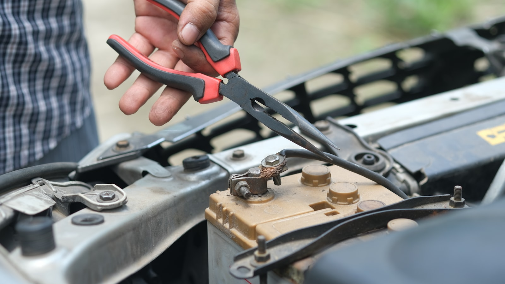
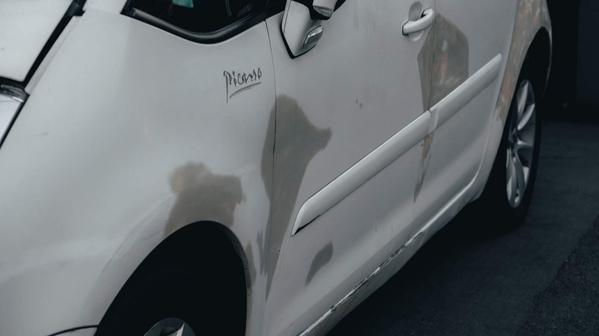
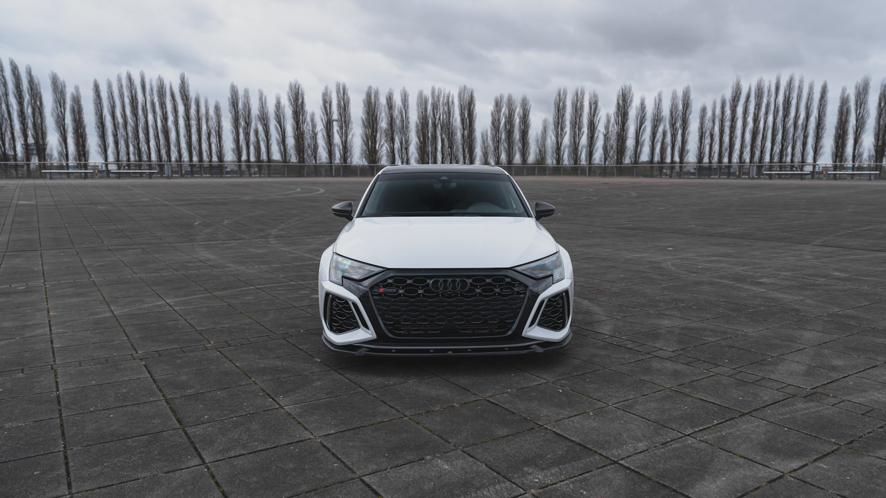
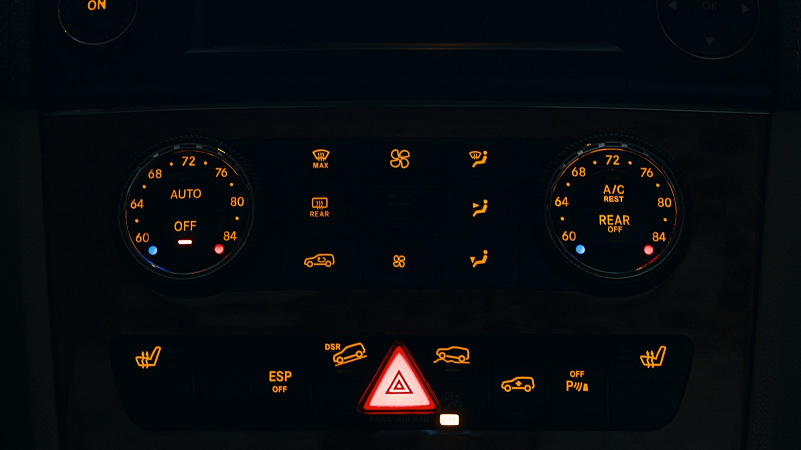
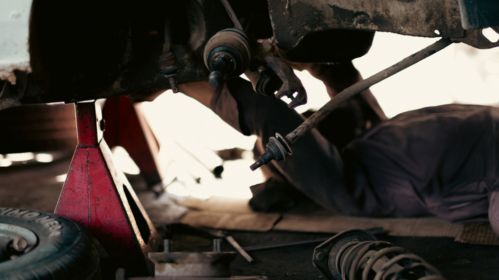
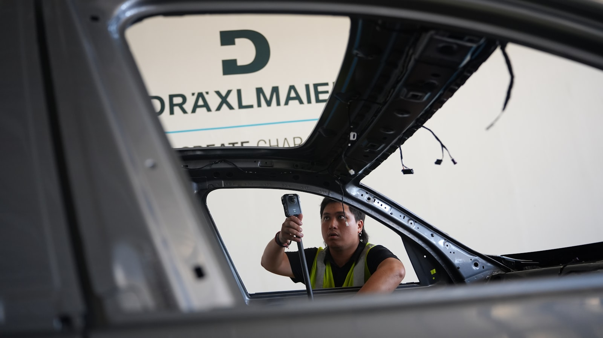

Uzman Ekip
Alanında deneyimli uzmanlar, araç geçmişini bilimsel verilerle analiz eder.

Aracınızı riske atmayın. Profesyonel ekipmanlarımız ve uzman kadromuzla dakikalar içinde detaylı ekspertiz raporu alın.
İkinci el araç alımında riskleri azaltan bağımsız ve net raporlama sistemi.
Neden Bizi Seçmelisiniz?
Alanında deneyimli uzmanlar, araç geçmişini bilimsel verilerle analiz eder.
Bağımsız raporlama sayesinde alım kararınızı net verilerle destekleriz.
Yeni nesil cihazlar ile motor, kaporta ve elektronik sistemler derinlemesine incelenir.
Randevudan rapor teslimine kadar süreç optimize edilmiştir.
Hizmetler
Motor performansı ve mekanik riskleri ölçümlü analiz.
Hasar, boya kalınlığı ve şasi kontrolü.
Güç kaybı ve performans değerleri.
Arıza kodları ve elektronik sistem taraması.
Güvenlik ve yol tutuş testleri.
Güvenlik ekipmanlarının doğrulaması.
Nasıl Çalışıyoruz?
Telefon veya WhatsApp üzerinden hızlıca randevunuzu oluşturuyoruz.
Motor, kaporta, elektronik ve güvenlik sistemleri kapsamlı şekilde incelenir.
Sonuçları net, anlaşılır ve dijital formatta teslim ediyoruz.

Aracınızı güvenle teslim alır, tüm detayları net şekilde öğrenirsiniz.
Paketler
Full kapsamlı ekspertiz ve raporlama.
Müşteri Görüşleri
“Aracı almadan önce getirdim, tüm detaylarıyla anlattılar. Güvenilir bir işletme.”
“Raporu dijital olarak aldım, her kalemi net gördüm. Hızlı ve profesyoneller.”
“Dyno testi sayesinde aracı doğru fiyata aldım. Süreç çok şeffaftı.”
Sıkça Sorulan Sorular
Güvenilir rapor ile doğru karar verin. Profesyonel destek için hemen arayın.